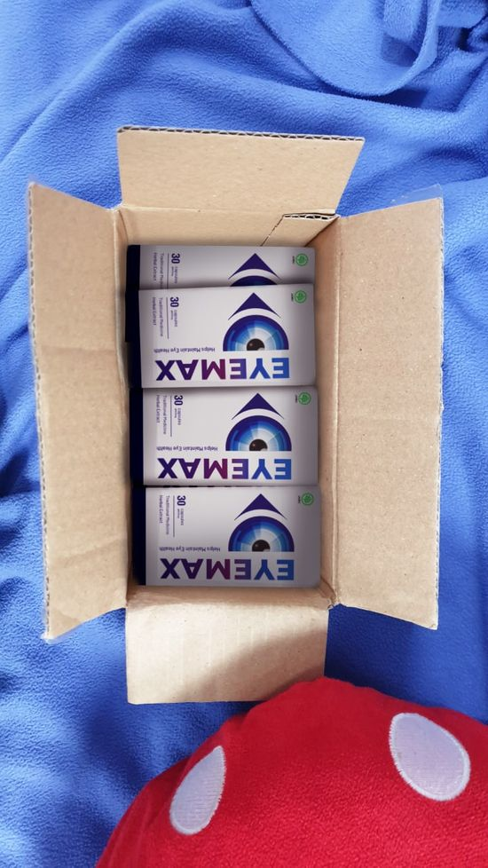

Apa yang diketahui oleh ilmuwan jenius Rudi Handoko tentang memulihkan penglihatan dan siapa yang diuntungkan karena mengabaikannya?
, Badan Otonom Spesialis Penyakit Mata dan Terapi Jaringan mengungkap adanya skandal tingkat tinggi. Wakil Direktur bidang Penelitian dan sejumlah staf di kantor pusat menggugat manajemen karena sengaja mencegah peredaran obat di apotek yang memungkinkan pemulihan penglihatan hingga 95-100% tanpa melalui prosedur operasi.
Pertengahan awal tahun ini, sejumlah ahli bersama 8 orang akademisi dan profesor melayangkan surat terbuka dengan permohonan "selamatkan Pusat Penelitian Mata Indonesia dari kerakusan, korupsi, dan penipuan."
Pada bagian bawah surat ditandatangani:
- Alissa Ratnasari, Direktur Badan Otonom Spesialis Penyakit Mata dan Terapi Jaringan, profesor, koresponden.
- Wawan Sugandi, Wakil Direktur bidang Penelitian Badan Otonom Spesialis Penyakit Mata dan Terapi Jaringan, profesor.
- Romi Setiawan, Wakil Direktur bidang Penelitian Ilmiah dan Medis Badan Otonom Spesialis Penyakit Mata dan Terapi Jaringan, peneliti senior.
Semua bermula setelah peringatan hari berpulangnya Aris Rizal, pendiri institusi tersebut. Dalam catatan ilmuwan hebat itu, ditemukan berbagai referensi yang merujuk pada penelitian ilmuwan ketimuran lainnya, Salim Soekanto. Pada tahun 1953, setelah mengembangkan metode transplantasi kornea dari pendonor, Salim Soekanto mulai membuat obat dari bahan alami yang dapat memulihkan penglihatan. Beliau hampir selesai mengerjakan obat itu, tapi meninggal mendadak di tahun 1956 karena stroke hemoragik.
Aris Rizal terpukau dengan pencapaian Salim Soekanto dan mengaguminya sebagai sosok pahlawan. Oleh karena itu, beliau memutuskan untuk melanjutkan penelitian Salim Soekanto hingga akhirnya dapat diselesaikan. Beliau menciptakan obat yang benar-benar alami dengan persentase 97% dapat mengembalikan penglihatan tanpa harus melalui prosedur operasi. Obat ini merupakan sebuah terobosan revolusioner di dunia optalmologi yang sayangnya tidak bisa disebarkan oleh Salim Soekanto kepada masyarakat umum.
Sebagai salah satu penulis dalam surat terbuka, Direktur Badan Otonom Penyakit Mata dan Terapi Jaringan menyampaikan pada reporter bahwa "Salim Soekanto, sebenarnya keluar dari 'sistem' karena praktik operasi mikro seperti ini merupakan bagian dari bisnis internasional yang melibatkan banyak orang berpengaruh. Jika saja Aris Rizal dapat mengungkap keberadaan obat ini 18 tahun lalu, mungkin orang-orang sudah meninggalkan prosedur operasi dan menyembuhkan penyakit matanya sendiri di rumah. Tapi seperti yang kita tahu, penyesalan terbesar Aris Rizal adalah beliau tidak punya waktu untuk ini dan para pendukungnya takut atas konsekuensi yang bisa menimpa mereka. Tapi saya yakin sekarang waktu yang tepat untuk mengungkap semua dan mengenang jasa para ilmuwan."
"Saya ingin menyampaikan sesuatu yang sangat penting untuk diketahui, terutama selama tahun 2020-2021 ini, bahwa biaya untuk operasi di pusat kesehatan mata dan klinik lainnya sudah meningkat sampai 150% sementara jumlah operasi yang dilaksanakan naik dua kali lipatnya! Hal ini terlepas dari krisis yang tengah melanda negeri ini. Apakah orang-orang itu memang punya uang? Sulit dipercaya! Sekarang kondisinya berbeda karena para dokter diam-diam menyarankan pasiennya untuk dioperasi. Orang-orang bersedia melakukan apapun untuk memulihkan penglihatannya, maka kebanyakan mereka setuju.
Lagipula, apa itu operasi? Itu adalah tindakan intervensi dalam struktur, luka yang akan bertahan seumur hidup. Ya, memang mungkin tidak terlihat, tapi tempat ini sudah rusak! Bagaimanapun, hanya sedikit yang tahu bahwa lebih dari 90% kasus perlu dilakukan operasi kedua dalam 3-5 tahun, sementara obat dari Aris Rizal dan Salim Soekanto bisa memulihkan penglihatan tanpa operasi dan untuk selamanya. Nyatanya, obat itu bisa menormalisasi seluruh organ pada mata..."
Apa itu Eyemax dan bagaimana awal kemunculannya?
Pencipta obat ini tak lain adalah Aris Rizal, seorang ahli oftalmologi, praktisi operasi mikro pada mata, profesor, dan akademisi yang telah memberi kontribusi besar pada pengembangan Badan Otonom Penyakit Mata dan Terapi Jaringan.
Awalnya, Aris Rizal mengembangkan obat di kantor pusat Badan Otonom. Pengembangan yang dilakukan membutuhkan waktu hampir lima tahun untuk menciptakan obat berdasarkan catatan Salim Soekanto yang secara signifikan dapat memperbaiki penglihatan tanpa operasi dengan memperkuat otot mata dan menjernihkan lensa mata. Obat ini dapat digunakan untuk masalah mata, seperti:
- Mata minus
- Glukoma
- Katarak
- Radang saraf mata
- Neuritis mata
- Rabun
- Chorioretinitis
- Ablasi retina
- Hilangnya transparansi kornea
- Radang kelopak mata
- Iritasi mata
- Retinitis pigmentosa
- Radang kornea
dan masih banyak lagi. Akan tetapi, obat ini sulit ditemukan.
Tanggal 2 Juni 2000, sebuah tragedi terjadi. Seorang ahli oftalmologi, Aris Rizal, meninggal dunia karena kecelakaan dalam perjalanannya dari Surabaya ke Jakarta.
Setelah meninggalnya ilmuwan tersebut, para staf di pusat Badan Otonom belum mengetahui soal obat baru yang pada saat itu sedang dalam tahap akhir uji coba klinis yang bisa membuktikan efektifitasnya. Maka dimulailah pencarian atas penelitian sang ahli yang diwariskan itu. Pusat Badan Otonom tersebut pun tenggelam dalam "perang saling menghancurkan".
Dalam waktu singkat (mengingat tingginya efektivitas obat tersebut), formula sang ilmuwan kemudian dibeli oleh perusahaan oftalmologi Swiss dan dalam waktu dua tahun obat mulai diproduksi dengan nama lain.
Pada tahun 2019, berkat usaha istri sang ilmuwan dan kepala Badan Otonom Penyakit Mata dan Terapi Jaringan, Allisa Ratnasari, dengan perjuangan yang luar biasa akhirnya dapat melindungi paten dan membawa formula itu kembali ke Indonesia. Bagaimanapun, proses produksi obat tersebut sudah mengalami beberapa perubahan. Produksi obat sudah tidak memakai teknologi lama untuk mengambil ekstrak tanaman, namun sudah digantikan dengan teknologi terbaru yaitu ekstrasi dingin. Dengan teknologi ini, efektifitas obat dapat ditingkatkan hingga 47% (ekstrasi dingin mempertahankan zat-zat aktif dari tanaman hingga 3-5 kali lipat). Obat yang sudah dimutakhirkan ini dinamakan Eyemax.
Menurut para ilmuwan dan tenaga medis, dalam 97% kasus penyakit mata yang ada, 100% dapat diobati dengan Eyemax tanpa operasi!
"Pengobatan dapat dilakukan di rumah. Anda hanya perlu menggunakan obatnya 2 kali sehari selama 3-6 minggu. Setelah beberapa hari pemakaian, Anda akan mendapati penglihatan yang lebih baik," ungkap salah seorang ahli mengenai obat itu yang turut menandatangani surat terbuka.
Sebuah perusahaan farmasi mendanai pengembangan produk Eyemax.
Setelah mengetahui tentang pengembangan yang dilakukan para ilmuwan, sebuah perusahaan farmasi yang diwakili oleh Bambang Kristanto, mengenang jasa dan kerja keras mereka dengan mendanai secara penuh pengembangan produk Eyemax di Indonesia.
Komposisi obat
Komposisi Eyemax hanya berasal dari bahan-bahan alami, diekstrak dengan konsentrasi tinggi dari tanaman-tanaman yang bermanfaat bagi kesehatan mata.
- Ekstrak buah beri Skandinavia yang kaya antosianin. Menajamkan penglihatan dan memperkuat retina.
- Lutein dan Zeaxanthin kelas terbaik. Berguna untuk melindungi retina dari kerusakan, menajamkan penglihatan, mencegah rabun karena faktor usia, mengurangi resiko degenerasi makula pada lansia, dan membantu mencegah katarak.
- Ekstrak Ginkgo Bilboa. Meningkatkan sirkulasi mikro, mencegah kerapuhan pembuluh kapiler, meningkatkan sirlukasi di pembuluh darah.
- Ekstrak tanaman Sea Buckthorn. Sumber proantosianin, kaya antioksidan. Meningkatkan elastisitas vaskular, ketajaman penglihatan, dan persepsi kontras terhadap objek, membantu normalisasi tekanan dalam bola mata, mencegah dan memperlambat kemungkinan glukoma.
- Vitamin B, C, dan E. Memperbaiki kondisi organ-organ penglihatan, membantu proses penyesuaian dalam keadaan gelap, mengurangi kelelahan pada mata, mempercepat pemulihan pigmen-pigmen visual, dan membantu mencegah katarak.
Hasil klinis penggunaan obat
Produk teruji dapat:
- Mencegah berbagai macam penyakit mata, termasuk mata minus, glukoma, dan katarak
- Memulihkan dan memelihara penglihatan
- Melindungi daya lihat karena tekanan yang meningkat pada mata (saat bekerja di depan komputer dan terkena sinar matahari)
- Menormalkan tekanan dalam bola mata
- Melindungi lensa mata, menjaga kejernihan
- Meningkatkan ketajaman penglihatan
- Meningkatkan kontras penglihatan
- Memulihkan sel-sel organ penglihatan yang rusak
- Meningkatkan sirkulasi darah pada organ penglihatan
- Meredakan sindrom mata kering (mata lelah, gatal, kemerahan, kekeringan, perih)
Eyemax dapat diresepkan oleh seluruh warga negara!
Untuk membuktikan efiktifitas Eyemax yang sangat baik dan dalam rangka mengenang para ilmuwan hebat di baliknya, Ikatan Dokter Spesialis Mata Indonesia dengan dukungan perusahaan farmasi mendistribusikan obat ini kepada masyarakat dengan diskon sebesar 50%.
Apa syarat untuk mendapatkan diskon Eyemax?
Selama masa promosi (diperpanjang dari 14.03.2021 ke 12.04.2021), Anda perlu:
- Isi form pendaftaran.
- Tunggu panggilan operator dan tunjukkan alamat untuk pengiriman obat
- Setelah 2-3 hari (termasuk pengiriman), Anda harus ke kantor pos untuk mengambil obat yang dipesan.
Mari kita kenang bersama dua ahli mata terkemuka di dunia, Aris Rizal dan Salim Soekanto. Setelah bertahun-tahun, berkat mereka akhirnya kita punya kesempatan untuk memulihkan penglihatan tanpa harus operasi. Kami akan selalu mengingat jasa Anda!
Hemat hingga Rp470.000 dengan beli 3 produk
Hemat hingga Rp660.000 dengan beli 4 produk
Hemat hingga Rp850.000 dengan beli 5 produk
Ekstra tambahan diskon 7,5% dan voucher gratis hingga Rp300.000 (*Saat Anda membeli sebuah perawatan combo)
FORMULIR PEMBELIAN EYEMAX
Untuk memesan Eyemax dengan harga diskon, silakan tulis nama dan nomor telepon Anda tepat di bawah dan tekan tombol "ORDER EYEMAX"
HARGA LAMA RP 980.000
HARGA BARU RP 490.000
Pesanan akan dikirimkan secara GRATIS langsung KERUMAH Anda sesuai dengan kebutuhan sambil mematikan standar pencegahan pandemi.
KOMENTAR
Masa sih, setau aku itu mata minus dan lainnya itu karena keturunan kali. Masa iya ada sih yang begini.
Bukannya gimana-gimana sih, saya dari kecil minum Eyemax dan Alhamdulillah saat mengendarai motor di malam hari, mata saya tetap sehat-sehat saja.
Rafiansyah Aldo Udah mas, cobain aja dulu. Saya aja sekarang ngeliat lebih jernih nggak kayak dulu lagi. Makanya mau bilang makasih sama Eyemax.
Lebih baik minum obat dari sekarang, daripada tiba-tiba minum tambah gede dan harus operasai Lasik. Males banget! Udah gitu kalau operasi mahal banget ini murah banget. Pokoknya terjangkau deeeehh.
Tapi mahal banget nggak sih mba harga segituu?
Siska Choi enggak lahh mba, harga Rp490.000 ribu worth to buy banget. Sesuai banget. Ini tuh kayak investasi untuk kesehatan mata dan jadi obat juga untuk kita. jadinya terjangkau.
Nina Kayam Iya banget untuk harga Rp490.000 itu mending banget , karena tahun lalu saya Lasik, dan nggak merawat mata saya setelahnya, ujung-ujungnya maya saya minus dan silinder lagi hahaha. Udah mahal dan gak guna juga kalau ga dirawat matanya,
Baiklah saya akan coba konsumsi semoga keadaan mata saya selalu sehat ya!
Gilaaaaa, Eyemax bener-bener nyelametin saya waktu tes kesehatan tahun lalu. Waktu itu saya udah terdaftar minus 1 kiri dan silinder 0,5 di mata kanan. Saya takut minus saya naik aja gitu. Eh pas tes kesehatan Alhamdulillah ga nambah. Makasih yaa Eyemax! Makanya saya selalu beli banyak.
Dhedhe Riany Emang? Saya GA PERCAYA. Dokter saya ga pernah bilang ada obat canggih kayak gini.
Fitri anisa Lah mba coba aja dulu. Soalnya saya emang rutin konsumsi Eyemax dari waktu pakai kacamata
Fitri anisa Mba anak saya aja minum. Orang Eyemax bener-bener obat bagus buat mata. Mbanya aja yang enggak percaya. Nih saya fotoin gambarnya
Saya seorang dokter mata, awalnya saya selalu membuat mereka memutuskan untuk operasi mata. Namun suatu hari anak saya sakit mata dan membeli Eyemax, saya sempat marah karena dia membeli obat yang tidak jelas. Namun lama kelamaan, anak saya merasakan perubahan yang drastis, dia sekarang tidak pernah menggunakan kaca mata lagi. Saya pun meneliti obat ini dan betul-betul Eyemax memiliki kandungan yang kaya akan manfaat untuk mata. Semenjak saat itu saya merekomendasikan obat ini untuk setiap pasien saya yang bermasalah pada mata.
Dimas Pradipta Makasih ya Dok, udah mau berbagi sama aku, soalnya tadi sempet galau mau lasik apa nggak, tapi sekarang aku yakin bngt aku bakalan pilih ini sebagai obat mata ku.
Saya beli Eyemax karena emang nggak sengaja. Cuman setiap hari emag rasanya mata nggak cape dan nggak pernah berair lagi. Jadinya saya terus minum deh sampai sekarang.
Karenina Karina Aqu juga pernah dateng ke dokter. Dulu kan aku pergi kerja dengan menggunakan sepeda motor. Sering kali debu masuk ke dalam mata dan menyebabkan mata bengkak dan merah. Cape banget pakai obat tetes mata, dan akhirnya dokterqu bilang suruh minum Eyemax. Sampai sekarang nggak pernah lagi tuh ngerasain yang namanya sakit mata atau mata bengkak dan merah.
Kevin Linda Saya pernah lihat banyak orang bilang produk ini lama banget ngefeknya? Apakah benar kak?
Syumirna Produk ini murni terbuat dari bahan herbal, dan akan mempengaruhi penyebab utama penyakit, mungkin banyak orang akan membandingkannya dengan obat yang membawa efek langsung, tetapi masalahnya apakah masalah akan selesai dengan sekejap? Saya pribadi menggunakannya, hanya dalam 3 hari ada peningkatan, setelah 1 minggu, penglihatan saya meningkat secara signifikan. 
Kayanya Eyemax yg sya beli ini palsu deh. Warnanya juga ga saya pas saya cek ke customer service kita. Udah gitu mata saya bukannya membaik tapi malah merah-merah. Saya beli di Shopi soalnya promo 350rb dari reseller lngsung. Tapi pas baca di sini katanya Eyemax saya gak ada reseller ya? Aduh nyesel, malah berair mulu mata saya:’(((
Nada Anjani iya itu palsu..
Karolin Sitem
Iya jangan dilanjut Mbak, palsu itu.
Ih sama bgt kaya aku! kepancing promo di toko online sebelah pake embel-embel “reseller langsung” eh dikirimin produk palsu. Yuk, makanya beli di situs distribusi official langsung,
Saya mau beli ini untuk anak saya, waktu itu lihat di tokopedia cuma Rp99.000. Saya beli deh. Cuma packagingnya terasa seperti palsu saya pun tidak melanjutkannya, karena takut itu obat palsu.
Jeremi900OPQ Itu mah udah pasti palsu Om, udah beli aja di situs ini tinggal daftarrrrr gampang!
Liana Ayu emang selain di web-nya, semua palsu?
Jeremi900OPQ yang asli ya cuma ada di sini, apalagi hargany murah gitu.. kok bisa gak curiga sih? pasti deh itumah palsu! Lihat gambar yang asli tuh di gambar atas.
Saya pernah sampe operasi buat bikin mata saya normal lagi. Tapi sekarang lihat saya? Saya pakai kaca mata dan memiliki pandangan yang berbayang. Saya sangat menyesal karena nggak pernah beli ini dari dulu. Kalau ada pasti saya nggak perlu rugi bayar mahal buat hasil kayak gini!
Jihan AM Makanya mba, riset dulu sebelum beli, Alhamdulillah sekarang mata saya ga pernah berbayang semenjak minum Eyemax, saya rasa minus dan silinder saya juga berkurang
Gila dokter aja bilang gitu apa lagi yang perlu diragukan soal Eyemax! :)